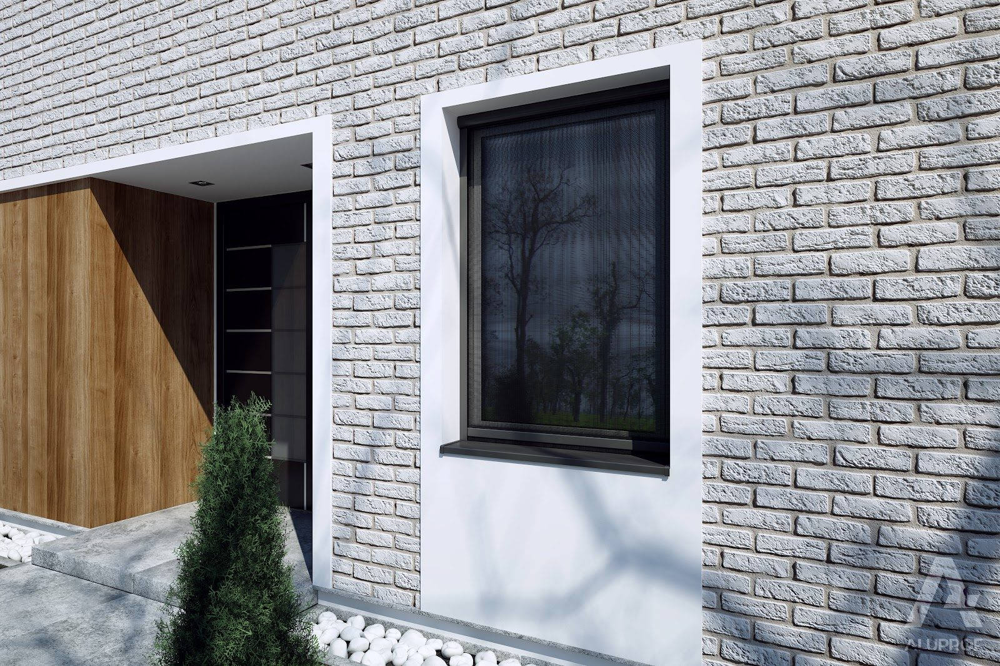
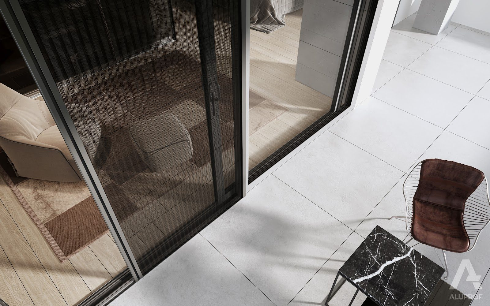

Selt
- Refleksole screen z prowadnicami ZIP — do 6 m szerokości
- Tkaniny serge o różnym stopniu otwarcia (1–5%)
- Kasety 85–150 mm, kolory RAL

Osłony zatrzymujące ciepło przed szybą (Selt / Aluprof) — najskuteczniejsza ochrona przed przegrzewaniem.


Zatrzymanie większości energii słonecznej przed szybą
Mniejsze zużycie klimatyzacji latem
Somfy io + czujniki nasłonecznienia
Pionowe rolety z tkaniny technicznej w prowadnicach ZIP.
Zewnętrzne lamele aluminiowe o przekroju C lub Z.


Stałe lub ruchome lamele wielkogabarytowe.
Harmonijkowa siatka do drzwi HST i portfenetrów — pełna oferta moskitier w osobnej kategorii.

Umów bezpłatną wizytę naszego eksperta na Twojej budowie. Precyzyjnie zmierzymy otwory, doradzimy technicznie i przygotujemy kalkulację cenową.